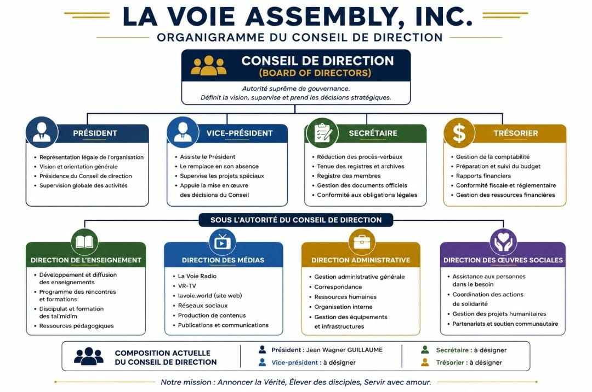

Organisation légalement constituée · État de l'Indiana
La Voie Assembly, Inc. est une organisation officiellement constituée dans l'État de l'Indiana (États-Unis d'Amérique). Elle assure le cadre légal, institutionnel et administratif de la communauté des Membres de La Voie, en soutenant sa mission d'enseignement, de rassemblement et de service conformément aux principes des Ketubim Qadoshim.
La gouvernance de l'organisation repose sur un Conseil de direction composé de quatre fonctions dirigeantes, assisté de quatre directions opérationnelles couvrant l'ensemble des activités de la communauté.
Organigramme du Conseil de direction

La Voie Assembly, Inc. — Conseil de direction et directions opérationnelles
Composition actuelle du Conseil de direction
| Fonction | Titulaire | Rôle principal |
|---|---|---|
| Président | Jean Wagner GUILLAUME | Représentation légale, vision et supervision globale |
| Vice-président | À désigner | Assistance au Président, supervision des projets spéciaux |
| Secrétaire | À désigner | Procès-verbaux, registres, conformité légale |
| Trésorier | À désigner | Comptabilité, budget, rapports financiers |
Directions opérationnelles
Direction de l'Enseignement
- Développement et diffusion des enseignements
- Programme des rencontres et formations
- Discipulat et formation des Tal'midim
- Ressources pédagogiques
Direction des Médias
- La Voie Radio
- VR-TV
- lavoie.world (site web)
- Réseaux sociaux
- Production de contenus
- Publications et communications
Direction Administrative
- Gestion administrative générale
- Correspondance
- Ressources humaines
- Organisation interne
- Gestion des équipements et infrastructures
Direction des Œuvres sociales
- Assistance aux personnes dans le besoin
- Coordination des actions de solidarité
- Gestion des projets humanitaires
- Partenariats et soutien communautaire
Mission de l'organisation
« Annoncer la Vérité, Élever des disciples, Servir avec amour. »